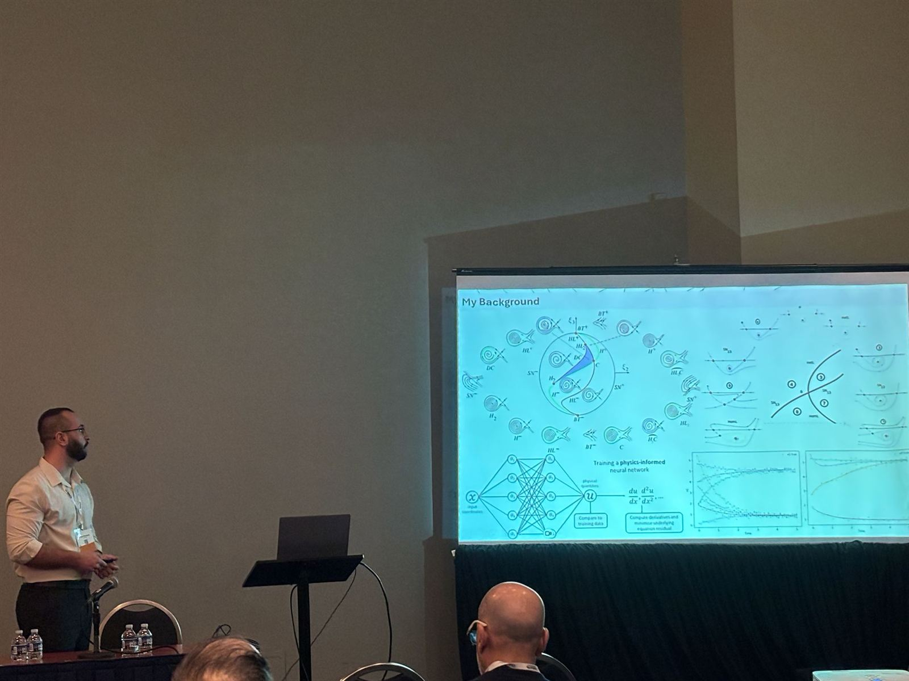
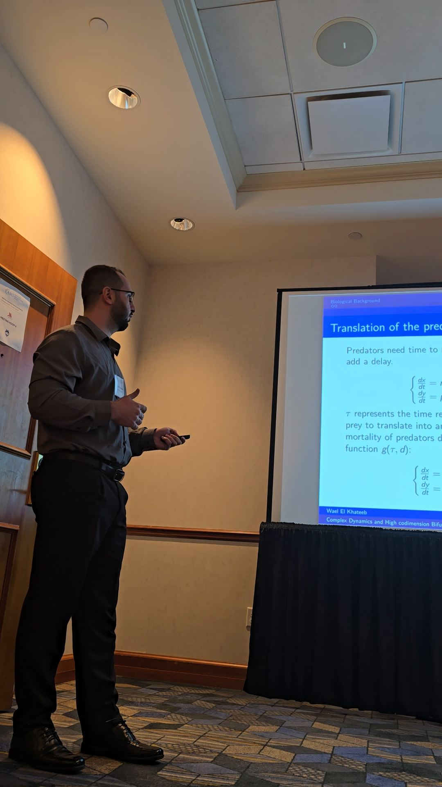
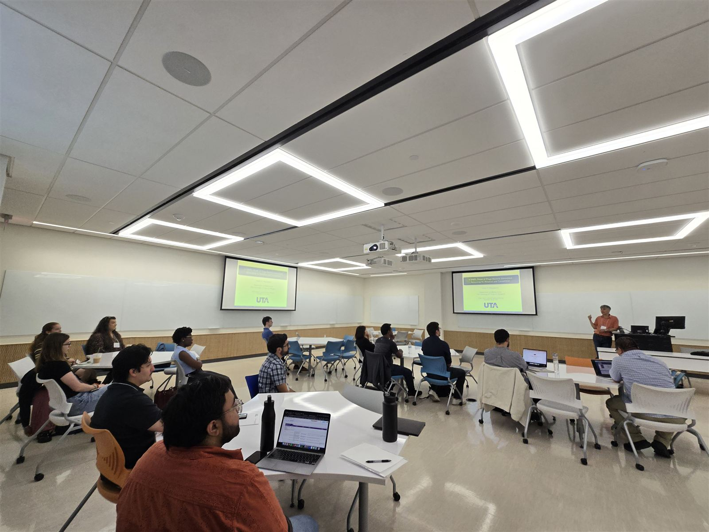

- July 2026
Cleveland, OhioInvited presentation · ScheduledPredators and Policies: Teaching ODEs by Modeling Florida's Alligator Ecosystem
SIAM ED26, MS5: Modeling Makes Mathematics More Meaningful.
- May 2026
Toledo, OhioInvited talkApplications of topology to gene regulatory networks
Buckeye Geometry Conference.
- February 2026
- January 2026
Orlando, FloridaInvited talkPhysics-informed neural networks and topological tools in gene regulatory networks
University of Central Florida.
- January 2026Conference talk
SIR models with spatial components and limited beds
Joint Mathematics Meetings 2026.
- January 2026Conference talk
Florida's Alligator Modeling Project
SIMIODE session at Joint Mathematics Meetings 2026.
- December 2025
Houston, TexasPosterPhysics-informed neural networks and feature maps
CBMS Conference, University of Houston.
- October 2025
Toledo, OhioSeminar talkSpatial and temporal pattern formation in SIR model
AMS Graduate Student Seminar, University of Toledo.
- September 2025Minisymposium organizer and speaker
Recent advancements in mathematical biology
Organized a minisymposium and delivered a talk at the SIAM Texas-Louisiana Sectional Meeting.
- May 2025
Denver, ColoradoContributed talkSIAM Conference on Applications of Dynamical Systems (DS25)
Denver, Colorado.
- April 2025
Lyon, France - April 2025
Storrs, ConnecticutContributed talkComplex dynamics and high-codimension bifurcations of a predator-prey model
American Mathematical Society Sectional Meeting, University of Connecticut.
- February 2024
Toledo, OhioSeminar talkAMS Graduate Student Seminar
University of Toledo.
- Beirut, LebanonInvited talk · Lebanese American University
Complex dynamics and high-codimension bifurcations of a predator-prey model
Including a comparison of neural networks and differential equations for modeling nonlinear dynamics.
Academic invitations
Invited talks and seminars
For invitations to speak in a seminar, conference session, teaching workshop, or interdisciplinary event:
welkhate@emporia.edu

